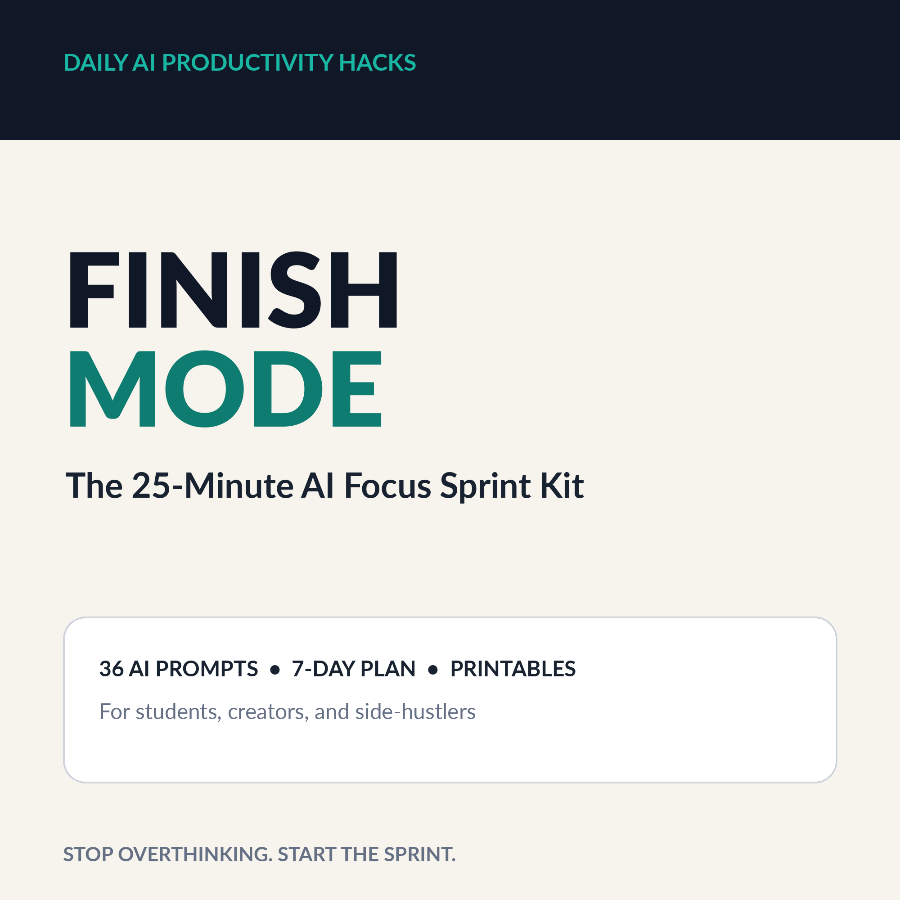
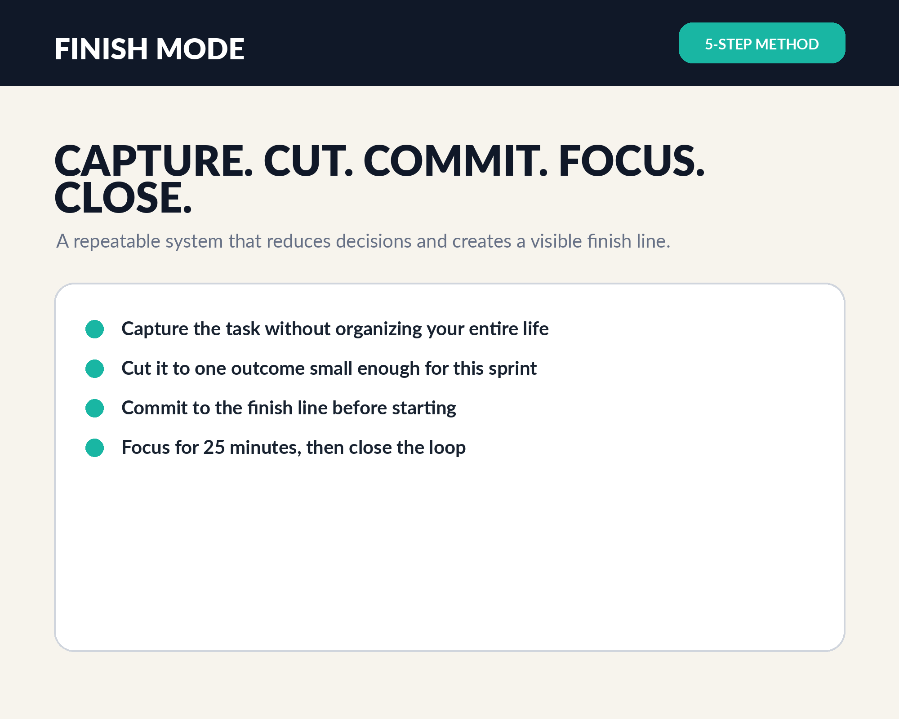
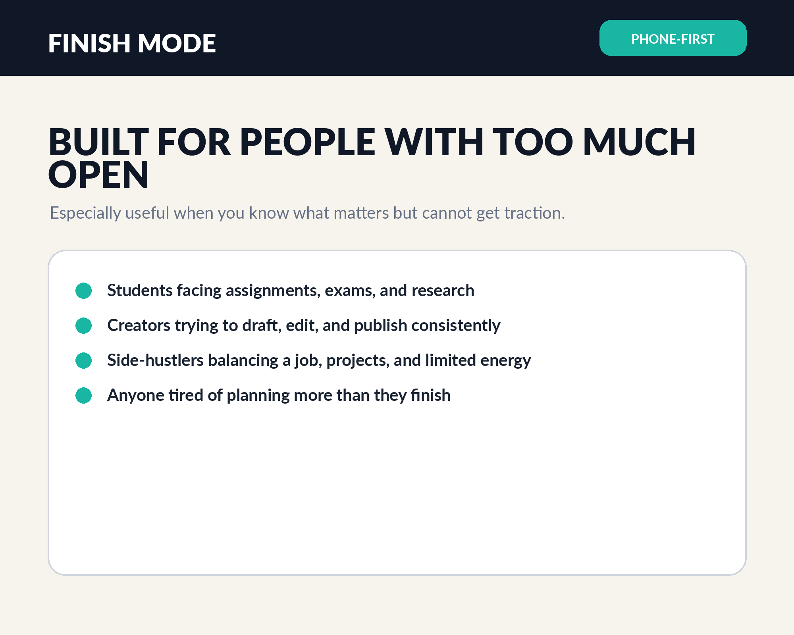

The task feels enormous
You know what matters, but the project is too big to enter cleanly.
Finish Mode turns vague, oversized work into one visible result—using a five-step sprint system, 36 focused AI prompts, and practical pages built for real life.
Digital download · Launch price $9 · No subscription

When the next step is vague, your brain keeps renegotiating the plan. Finish Mode removes the fog and gives the next 25 minutes a finish line.
You know what matters, but the project is too big to enter cleanly.
You keep rebuilding the system instead of producing the next result.
Choose one prompt, define one visible result, and begin before your brain opens another meeting.

This is not a giant generic prompt dump. Every prompt has a specific job.
Break the freeze and enter the task with a small, obvious first move.
Create enough structure to move without turning planning into the project.
Convert passive review into active recall, questions, and testable progress.
Draft, organize, and refine content without losing the core idea.
Close open loops, make final decisions, and ship the version that exists.
Recover after interruption, overwhelm, or a day that did not follow the plan.
Finish Mode respects the fact that your life is already full. It helps you make the next block count without pretending every day will be perfect.

Enter Finish Mode. Complete the next important thing.